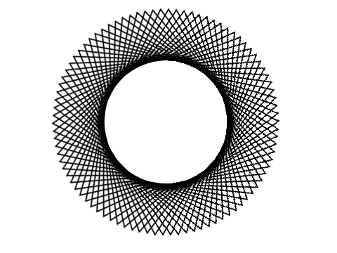
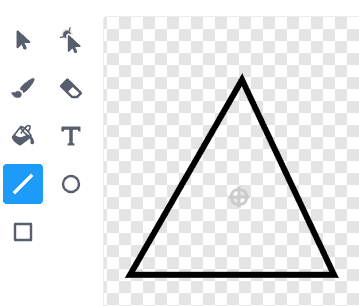
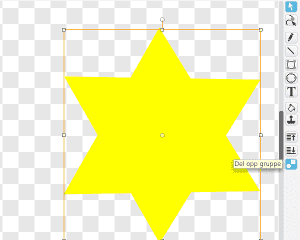

Det er ganske enkelt å lage interessante animasjoner i Scratch. Her skal vi se
hvordan vi kan flytte og snurre på figurer for å skape spennende mønstre.

Steg 1: En snurrig figur
La oss begynne enkelt. Vi vil først se hvordan vi kan flytte og snurre på en figur.
Sjekkliste
Start et nytt prosjekt, for eksempel ved å klikke Programmering i
menyen. Hvis du allerede har startet et prosjekt kan du begynne på
et nytt ved å velge Fil og deretter Ny.
Slett kattefiguren.
Vi vil starte med en enkel trekant-figur. Denne kan vi lage på forskjellige
måter. Først tegner vi denne selv, men nedenfor vil vi også vise deg hvordan
du kan lage en trekant fra en av de eksisterende figurene.
Klikk på for å tegne din egen
figur. Trykk deretter Bytt til vektorgrafikk nede til høyre, og bruk
linjeverktøyet, , til å tegne en trekant.

Nå skal vi få trekanten til å flytte seg! Skriv denne koden:
når [a v] trykkes
gå til x: (0) y: (120)
pek i retning (90 v)
gjenta (90) ganger
vend høyre (4) grader
gå (8) steg
slutt
Test prosjektet
Trykk på A-tasten.
Flytter trekanten seg rundt på skjermen?
Legg merke til at trekanten snurrer mens den flytter seg.
Lagre prosjektet
Du har nå skrevet et lite program! Scratch lagrer alt du gjør med
jevne mellomrom. Det er likevel en god vane å lagre selv også
innimellom.
Over scenen er det et tekstfelt hvor du kan gi et navn til prosjektet
ditt. Kall det for eksempel Snurrige figurer.
I menyen Fil kan du velge Lagre nå for å lagre prosjektet.
Endre en eksisterende figur
Selv om det ikke finnes en trekant i figurbiblioteket, kan vi gjøre om en av de
andre figurene til en trekant. Om du allerede har laget en trekant trenger du
ikke gjøre dette. Men det viser deg en morsom måte å leke med Scratchfigurene
på.
Klikk på for å
hente en eksisterende figur. Velg figuren ting/Star2.
Gå til Drakter-fanen. Ser du at denne stjernen består av to trekanter lagt
oppå hverandre?
Klikk på stjernen slik at den får en firkant rundt seg (blir merket). Det
dukker da opp en ny knapp som kalles Del opp gruppe (se skjermbildet
under). Klikk på denne knappen.

Stjernen har nå blitt delt i to trekant-figurer. Du kan nå klikke på en av
trekantene, og deretter på delete-tasten på tastaturet for å slette den.
Du står nå igjen med en trekant-figur! Bruk gjerne Fyll farge-verktøyet,
for å endre farge på trekanten!
Steg 2: Mange trekanter
Mye morsomt kan skje når vi lager mange trekanter!
Sjekkliste
Vi skal nå lage mange trekanter. Dette gjør vi ved hjelp av noe som heter
kloning. I Scratch er en klon en kopi av en figur.
Kopier koden du skrev tidligere ved å høyreklikke på den og velg lag en kopi. Endre tasten som starter skriptet til b og legg klossen lag klon av [meg v] nederst i gjenta-løkken. Det nye skriptet
skal da se slik ut:
når [b v] trykkes
gå til x: (0) y: (120)
pek i retning (90 v)
gjenta (90) ganger
vend høyre (4) grader
gå (8) steg
lag klon av [meg v]
slutt
Test prosjektet
Trykk på B-tasten.
Nå skal det tegnes mange trekanter på skjermen i en sirkel.
Om du stopper skriptet (klikk på den røde knappen ved siden av det grønne
flagget) blir trekantene borte! Dette er fordi trekantene var kopier som bare
lever så lenge programmet kjører, de er ikke egne figurer.
Sjekkliste
Vi kan også få trekantene til å røre på seg. Skriv først denne enkle koden:
når jeg mottar [snurr v]
for alltid
vend høyre (4) grader
slutt
Legg til klossen send melding [snurr v] nederst i B-skriptet (etter
gjenta-løkken).
Test prosjektet
Trykk på B-tasten.
Begynner trekantene å røre på seg etter at de er tegnet opp? Blir mønsteret levende?
Prøv å endre på 4-tallet i snurr-skriptet. Hva skjer? Alt dette skjer bare
fordi mange trekanter snurrer sammen!
Sjekkliste
Vi kan også la trekantene flytte litt på seg. Skriv et nytt skript:
når jeg mottar [flytt og snurr v]
for alltid
gå (3) steg
vend høyre (4) grader
slutt
Endre send melding [ v]-klossen nederst i B-skriptet slik at den starter
dette nye flytt og snurr-skriptet.
Test prosjektet
Trykk på B-tasten.
Hvordan endrer mønsteret seg?
Prøv igjen å endre på tallene i det siste skriptet.
Steg 3: Mer variasjon
Vi skal nå se hvordan vi kan lage mer variasjon blant de snurrende figurene,
ved å endre på hvordan de starter.
Sjekkliste
Lag en ny variabel, retning :: variables. Det er viktig at du merker av at variabelen
gjelder kun For denne figuren. Dette gjør nemlig at hver klon kan ha sin
egen verdi for retning :: variables.
Lag en kopi av B-skriptet. Endre tasten som starter skriptet til c, og
legg også til de to retning :: stack variables-klossene.
når [c v] trykkes
sett [retning v] til (0)
gå til x: (0) y: (120)
pek i retning (90 v)
gjenta (90) ganger
vend høyre (4) grader
gå (8) steg
endre [retning v] med (-4)
lag klon av [meg v]
slutt
send melding [flytt og snurr v]
Nå skal vi sette retningen på hver klon i det den lages. Lag dette nye skriptet:
når jeg starter som klon
pek i retning (retning :: variables)
Test prosjektet
Trykk på C-tasten.
Ser du at trekantene peker i andre retninger. Dette forandrer mønsteret helt!
Det ser ut som om en enkelt trekant svever rundt litt utenfor mønsteret! Hva
skjer med denne trekanten?
Sjekkliste
Den ene trekanten som ikke passer helt inn i mønsteret er figuren vår. Alle de
andre trekantene er kloner. Vi har ikke sett denne trekanten tidligere fordi
den pekte i samme retning som klonene. Men nå snur vi jo på klonene!
La oss skjule figuren så den ikke ødelegger mønsteret. Legg til en
skjul-kloss øverst i C-skriptet.
Siden klonene er kopier av figuren vil de også skjules. Det vil vi jo ikke. Vi
må derfor passe på at klonene vises. Legg til en vis-kloss som dette:
når jeg starter som klon
vis
pek i retning (retning :: variables)
Test prosjektet
Trykk på C-tasten.
Er den flytende trekanten som ikke passet inn i mønsteret borte?
Lek med tallet -4 i endre [retning v] :: variables-klossen. Hvilken
effekt har det å endre dette tallet?
Du oppdager kanskje at det fungerer best om tallet går opp i 4? Hvorfor
henger ikke figuren sammen hvis tallet ikke går opp i 4? (Prøv for eksempel
med endre [retning v] med (1).)
Steg 4: Andre figurer
Vi kan også lage mønstre av andre figurer enn trekanter.
Sjekkliste
Klikk på Drakter-fanen. Velg en ny drakt fra biblioteket ved å klikke på
. Velg for
eksempel hjertet ting/heart red.
Start programmet igjen ved å trykke på C-tasten. Dannes det nå et mønster
av hjerter? Prøv å hente inn andre drakter eller tegn dine egne.
For å lage spennende mønstre er det også andre ting du kan endre på. Prøv å
legg til klosser for gjennomsiktig effekt og fargeeffekt som følger:
når [c v] trykkes
skjul
sett [gjennomsiktig v] effekt til (70)
sett [retning v] til (0)
gå til x: (0) y: (120)
pek i retning (90 v)
gjenta (90) ganger
vend høyre (4) grader
gå (8) steg
endre [retning v] med (-4)
endre [farge v] effekt med (20)
lag klon av [meg v]
slutt
send melding [flytt og snurr v]
Flere ideer
Tenk på andre ting du kan gjøre for å lage interessante snurrige figurer. Her er
noen ideer:
Endre størrelsen på de forskjellige klonene.
Tegn en figur som består av tekst. Kanskje du kan få navnet ditt til å danse
rundt på skjermen?
Endre senterpunktet til drakten: Klikk Drakter-fanen og klikk på
øverst til høyre.
Bruk penn-verktøyet for å tegne mønster på bakgrunnen samtidig. Legg for
eksempel til klossen penn på under når jeg starter som klon.
Forbedre denne siden
Funnet en feil? Kunne noe vært bedre? Hvis ja, vennligst gi oss tilbakemelding ved å lage en sak på Github eller fiks feilen selv om du kan. Vi er takknemlige for enhver tilbakemelding!

 for å tegne din egen
figur. Trykk deretter
for å tegne din egen
figur. Trykk deretter  , til å tegne en trekant.
, til å tegne en trekant. for å
hente en eksisterende figur. Velg figuren
for å
hente en eksisterende figur. Velg figuren 
 øverst til høyre.
øverst til høyre.